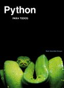

Python es un lenguaje de programación creado por Guido van Rossum a principios de los años 90 cuyo nombre está inspirado en el grupo de cómicos ingleses “Monty Python”. Es un lenguaje similar a Perl, pero con una sintaxis muy limpia y que favorece un código legible. Se trata de un lenguaje interpretado o de script, con tipado dinámico, fuertemente tipado, multiplataforma y orientado a objetos.
Python es un lenguaje que todo el mundo debería conocer. Su sintaxis simple, clara y sencilla; el tipado dinámico, el gestor de memoria, la gran cantidad de librerías disponibles y la potencia del lenguaje, entre otros, hacen que desarrollar una aplicación en Python sea sencillo, muy rápido y, lo que es más importante, divertido. La sintaxis de Python es tan sencilla y cercana al lenguaje natural que Introducción 9 los programas elaborados en Python parecen pseudocódigo.

Por este motivo se trata además de uno de los mejores lenguajes para comenzar a programar. Python no es adecuado sin embargo para la programación de bajo nivel o para aplicaciones en las que el rendimiento sea crítico. Algunos casos de éxito en el uso de Python son Google, Yahoo, la NASA, Industrias Light Magic, y todas las distribuciones Linux, en las que Python cada vez representa un tanto por ciento mayor de los programas disponibles.
Como comentábamos en el capítulo anterior existen dos formas de ejecutar código Python, bien en una sesión interactiva (línea a línea) con el intérprete, o bien de la forma habitual, escribiendo el código en un archivo de código fuente y ejecutándolo. El primer programa que vamos a escribir en Python es el clásico Hola Mundo, y en este lenguaje es tan simple como:
print “Hola Mundo”
Vamos a probarlo primero en el intérprete. Ejecuta python o ipython según tus preferencias, escribe la línea anterior y pulsa Enter. El intérprete responderá mostrando en la consola el texto Hola Mundo.
En Python los tipos básicos se dividen en:
Números, como pueden ser 3 (entero), 15.57 (de coma flotante) o 7 + 5j (complejos)
Cadenas de texto, como “Hola Mundo”
Valores booleanos: True (cierto) y False (falso)
Vamos a crear un par de variables a modo de ejemplo. Una de tipo cadena y una de tipo entero:
# esto es una cadena
c = “Hola Mundo”
# y esto es un entero
e = 23
# podemos comprobarlo con la función type
type(c)
type(e)
Como veis en Python, a diferencia de muchos otros lenguajes, no se declara el tipo de la variable al crearla. En Java, por ejemplo, escribiríamos:
String c = “Hola Mundo”; int e = 23;
Este pequeño ejemplo también nos ha servido para presentar los comentarios inline en Python: cadenas de texto que comienzan con el carácter # y que Python ignora totalmente. Hay más tipos de comentarios, de los que hablaremos más adelante.
Como decíamos al comienzo del capítulo una variable de tipo booleano sólo puede tener dos valores: True (cierto) y False (falso). Estos valores son especialmente importantes para las expresiones condicionales y los bucles, como veremos más adelante. En realidad el tipo bool (el tipo de los booleanos) es una subclase del tipo int. Puede que esto no tenga mucho sentido para tí si no conoces los términos de la orientación a objetos, que veremos más adelante, aunque tampoco es nada importante. Estos son los distintos tipos de operadores con los que podemos trabajar con valores booleanos, los llamados operadores lógicos o condicionales:
Table 1.
| Operador | Descripcion | Ejemplo |
|---|---|---|
| and | ¿se cumple a y b? | r = True and False # r es False |
| or | ¿se cumple a o b? | r = True or False # r es True |
| not | No a | r = not True # r es False |